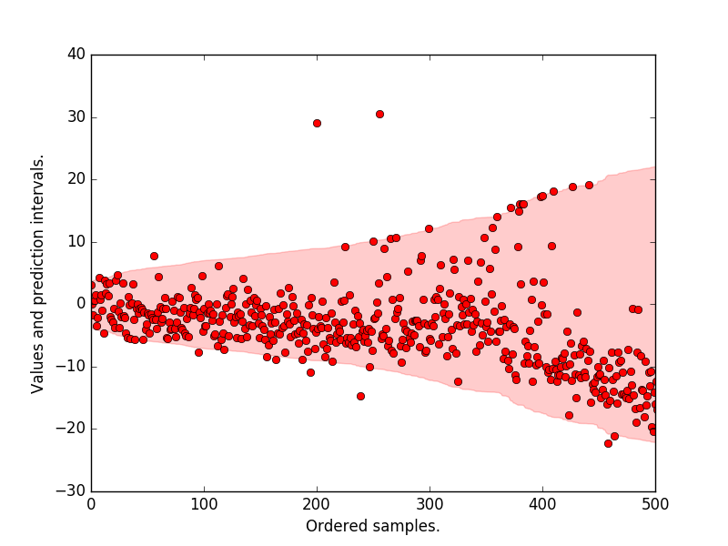

Quantile Regression Forests
Introduction
Most estimators during prediction return , which can be interpreted as the answer to the question, what is the expected value of your output given the input?
Quantile methods, return at for which where is the percentile and is the quantile. One quick use-case where this is useful is when there are a number of outliers which can influence the conditional mean. It is sometimes important to obtain estimates at different percentiles, (when grading on a curve is done for instance.)
Note: Some machine learning models also return the entire distribution of . such as Gaussian Processes and Mondrian Forests. A useful application is in hyperparameter optimisation, where the conditional distribution is necessary to balance the exploitation and exploration.
Quantile Decision Trees
It is fairly straightforward to extend a standard decision tree to provide predictions at percentiles. When a decision tree is fit, the trick is to store not only the sufficient statistics of the target at the leaf node such as the mean and variance but also all the target values in the leaf node. At prediction, these are used to compute empirical quantile estimates.
Let's say, the parameter min_samples_leaf is set to 5, then for a new sample
X, the 5 samples in the leaf are given equal weight while determining
at different quantiles. If min_samples_leaf is set to 1, then
the expectation equals the quantile at every percentile.
Note: The empirical estimation of quantiles can be done in many ways.
scikit-garden, relies on this Weighted Percentile Method
Quantile Regression Forests.
The same approach can be extended to RandomForests. To estimate
each target value in y_train is given a weight. Formally, the weight given to
y_train[j] while estimating the quantile is where denotes the leaf
that falls into.
Informally, what it means that for a new unknown sample, we first find the leaf that it
falls into at each tree. Then for each (X, y) in the training data, a weight is
given to y at each tree in the following manner.
- If it is in the same leaf as the new sample, then the weight is the fraction of samples in the same leaf.
- If not, then the weight is zero.
These weights for each y are summed up across all trees and averaged.
Now since we have an array of target values and an array of weights corresponding
to these target values, we can use this to measure empirical quantile estimates.
Example
We will now use the ExtraTreesQuantileRegressor from scikit-garden to plot
prediction intervals on the boston dataset.
Import necessary things
import matplotlib.pyplot as plt
import numpy as np
from sklearn.datasets import load_boston
from sklearn.model_selection import train_test_split
from sklearn.model_selection import KFold
from skgarden import RandomForestQuantileRegressor
Load data and the necessary estimators. Note that min_samples_split
is set to 10 and the cross-validation is 5-split.
boston = load_boston()
X, y = boston.data, boston.target
kf = KFold(n_splits=5, random_state=0)
rfqr = RandomForestQuantileRegressor(
random_state=0, min_samples_split=10, n_estimators=1000)
Store the quantiles at the 98.5th and 2.5th percentile.
y_true_all = []
lower = []
upper = []
for train_index, test_index in kf.split(X):
X_train, X_test, y_train, y_test = (
X[train_index], X[test_index], y[train_index], y[test_index])
rfqr.set_params(max_features=X_train.shape[1] // 3)
rfqr.fit(X_train, y_train)
y_true_all = np.concatenate((y_true_all, y_test))
upper = np.concatenate((upper, rfqr.predict(X_test, quantile=98.5)))
lower = np.concatenate((lower, rfqr.predict(X_test, quantile=2.5)))
interval = upper - lower
sort_ind = np.argsort(interval)
y_true_all = y_true_all[sort_ind]
upper = upper[sort_ind]
lower = lower[sort_ind]
mean = (upper + lower) / 2
# Center such that the mean of the prediction interval is at 0.0
y_true_all -= mean
upper -= mean
lower -= mean
Plot the prediction intervals, the original target values. We see that most
of the samples lie within the 95 p.c prediction interval.
```python
plt.plot(y_true_all, "ro")
plt.fill_between(
np.arange(len(upper)), lower, upper, alpha=0.2, color="r",
label="Pred. interval")
plt.xlabel("Ordered samples.")
plt.ylabel("Values and prediction intervals.")
plt.xlim([0, 500])
plt.show()
